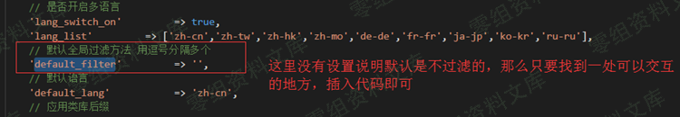
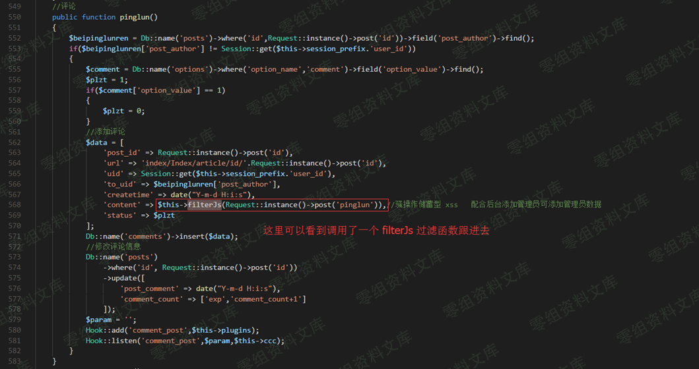
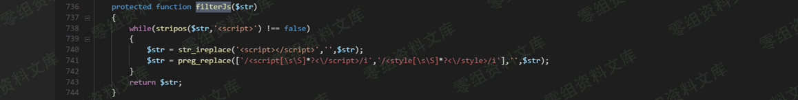

CatfishCMS 4.5.7 xss¶
一、漏洞简介¶
二、漏洞影响¶
CatfishCMS 4.5
三、复现过程¶
漏洞分析¶
文件：application\config.php
参数：default_filter

最后找到一处未过滤的地方
文件：application/index/controller/Index.php
方法：pinglun()

过滤函数
文件：application\index\controller\Common.php
方法：filterJs()

可以看到只是简单的过滤
很简单就可以绕过\</p> \<h3 id=\"复现\">复现\</h3> \<p>自己在此cms注册一个账号然后随便点击一篇文章\</p> \<p>\<img src=\"https://wiki.0-sec.org/img/20200419/d5c4f5fa204c4109a5bb2ebf6f827dd9.png\" alt=\"image\" class=\"large\" onclick=\"window.open(this.src)\" />\</p> \<p>\<img src=\"https://wiki.0-sec.org/img/20200419/16e03c0d17564b6698d4d7030b7f5b8c.png\" alt=\"image\" class=\"large\" onclick=\"window.open(this.src)\" />\</p> \<p>\<img src=\"https://wiki.0-sec.org/img/20200419/fd3b149615864b18bb72584c04d0e838.png\" alt=\"image\" class=\"large\" onclick=\"window.open(this.src)\" />\</p> \<p>\<img src=\"https://wiki.0-sec.org/img/20200419/cd0229da18524b94a9c48886719b9365.png\" alt=\"image\" class=\"large\" onclick=\"window.open(this.src)\" />\</p>
{kind=link}
{kind=link}
{kind=link}
{kind=link}